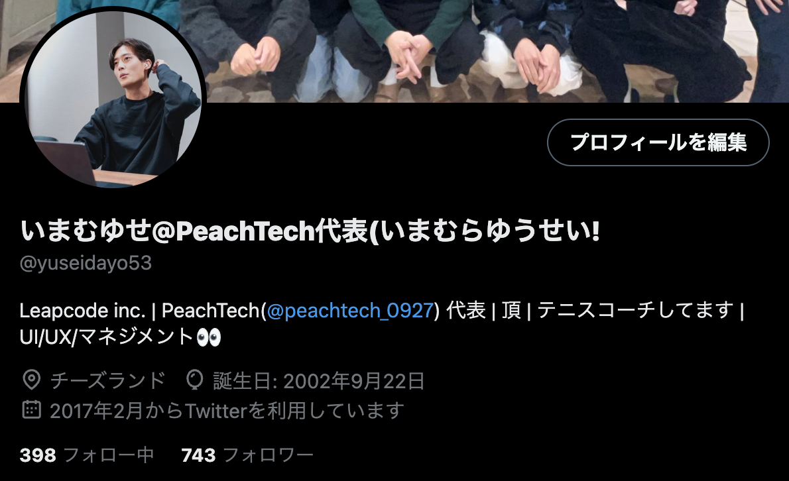

PeachTechとは
PeachTechとは、成蹊大学のプログラミングをやってみたい学生が集まるプログラミングサークルです。
初心者から経験のあるエンジニアまで幅広く、文系理系関係なく40人のメンバーが在籍しています。

代表(自己)紹介

名前: 今村悠聖
学部: 経済学部現代経済学科3年
経歴:
- 硬式テニス 全国大会出場
- エンジニア団体 PeachTech代表
- 株式会社Leapcode 代表取締役
- 硬式テニス 全国大会出場
- エンジニア団体 PeachTech代表
- 株式会社Leapcode 代表取締役
メンバー
人数: 40人(男子34人 女子6人)
学部割合: 文系10人 理系30人
中にはどんな人がいるの???
⬇︎ ⬇︎ ⬇︎
⬇︎ ⬇︎ ⬇︎
- プログラミングの授業落単回避のため
- やりたいことがなく、少しITに興味があった
- 授業でやったことを活かしたい/本質的なことをしたい
- プログラミングは苦手だが、デザインに興味ある
- ゲーム/webサイト・アプリ/データサイエンスに興味がある
- 本気でエンジニア職を目指している
活動内容
オンライン活動
Discordというアプリを使って、基本オンライン活動をしています。頻繁に各々が悩みやつぶやきを共有したり、ミーティングをする機会も沢山あります。
対面活動/勉強会
週一で対面活動があります。完全自由参加です。対面活動ではメンバーとコミュニケーションを直で取ることができ、時には勉強会も実施しています(オンラインの場合も多い)
チーム開発
成蹊大学に必要そうなサイトやサークル内で欲しいサービスをチームで開発しています。web開発やゲーム開発がメイン。未経験の学生をつよつよエンジニアに育てます！
他大学、企業交流
ある企業とアンバサター契約をしてもらっています。また、他大学や企業と勉強会や交流会を実施し、学生の中で成長を重ねていく特徴があります！
就活サポート
既åに就職活動を終えた先輩たちがいます。メガベンチャーや有名企業に内定をもらう方も多く、学生のうちに何をすべきかを考えます(エンジニア職に就かない人も在籍)
イベント
欅祭に出てみたり、誕生日を祝ったり、エンジニア交流会に参加したり等々、全くプログラミングをしないイベントもあり、メンバー間の距離感を縮めることを意識しています。
活動実績
企業からインタビュー/勉強会のコラボ
→ 企業2社からインタビューを受ける
→ ある企業とのアンバサダー提携で学習や就活のサポート
→ 株式会社Progateとの勉強会
→ GMOインターネットグループ株式会社のオフィスにお邪魔し交流会
→ 東京大学や早稲田大学のプログラミングサークルと勉強会
欅祭の展示や普段の活動が評価され、成蹊大学から賞を受賞
→ 欅祭でPeachTechの認知度が高まる(まだ創設され1年/初めての欅祭)
→ PeachTechから15個以上のプロダクトが展示
→ 多くの学生や子供、大人の方にプロダクトを触ってもらう
→ 学長や教務部の方にも拝見してもらい、嬉しいお言葉をいただく
→ 各々がさまざまな方向に向かって力を注いでいるところを評価される
メンバーたちのさまざまな活躍
→ 初心者ながら初心者向けハッカソンに出場するメンバーが多数
→ 様々なハッカソンで多数賞を受賞
→ 42Tokyoというエンジニア養成機関に2名在籍
→ 未経験の状態から代表と一緒に2ヶ月web開発し、実務レベルに到達
→ 起業経験があるメンバーが在籍
こんな人に入って欲しい
→ やりたいことを見つけたい/新しいことに挑戦したい
→ プログラミングに興味がある
→ 理想のwebサイト/アプリ/ゲームを作ってみたい
→ 何から勉強すればいいかわからない
→ IT周りに興味があり何かに携わってみたい
→ デザインに興味がある
→ エンジニア職で就活をやり遂げたい